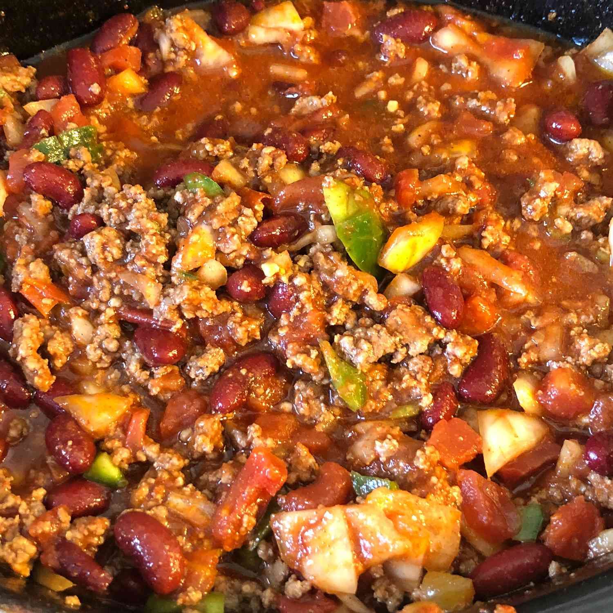

Spicy Chili

This satisfying spicy chili recipe is made using a slow cooker.
Start it before you head to work, and come home to a ready to go
delicious meal.
Ingredients
- Ground beef
- Kidney beans
- Diced tomatoes
- Tomato sauce
- Chopped onions
- Chopped green bell pepper
- Minced garlic cloves
- Chili powder
- Cayenne pepper
- Salt
- Black pepper
- Shredded cheddar cheese
Steps
- Heat a large skillet over medium-high heat. Cook and stir
ground beef in the hote skillet until browned and crumbly. Approx
5-7 minutes.
- Combine beef, beans, diced tomatoes, tomato sauce, onions,
bell pepper, garlic, chili powder, cayenne pepper, salt, and
black pepper in a slow cooker.
- Cover and cook on Low for 10 hours, or High for 4 hours.
- Garnish each serving with Cheddar cheese.
- Enjoy!